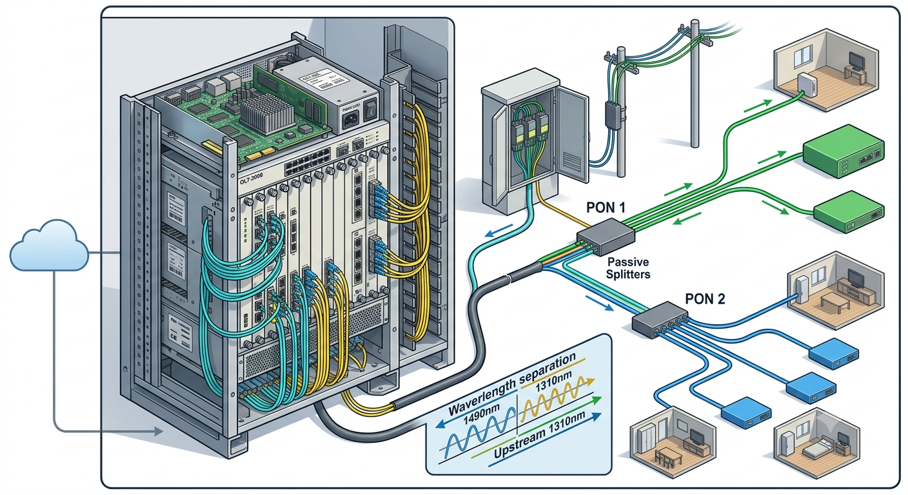

OLT ဆိုတာဘာလဲ?
OLT ဆိုသည်မှာ Optical Line Terminal ၏ အတိုကောက်ဖြစ်ပြီး FTTH (Fiber to the Home) နှင့် အခြား PON (Passive Optical Network) ကွန်ရက်များတွင် အသုံးပြုသော အရေးကြီးသည့် ဗဟိုစက်ပစ္စည်းတစ်ခု ဖြစ်သည်။
OLT သည် Service Provider ၏ Core Network နှင့် Customer ဘက်ရှိ ONT/ONU များကြားတွင် ဆက်သွယ်ပေးသော အဓိက Network Device ဖြစ်သည်။ အလွယ်ပြောရလျှင် Internet Network မှလာသော Data များကို PON Network မှတစ်ဆင့် Customer များထံ ပို့ပေးရန်နှင့် Customer ဘက်မှ ပြန်လာသော Data များကို Network ဘက်သို့ ပြန်ပို့ရန် OLT က အဓိကတာဝန်ယူသည်။
OLT = Service Provider ဘက်ရှိ PON Network ၏ အဓိက ဗဟိုစက်
OLT က Internet/Core Network နှင့် ONT/ONU Customer များကို PON Network မှတစ်ဆင့် ချိတ်ဆက်ပေးသည်။
OLT ဘယ်လိုအလုပ်လုပ်သလဲ?
PON Network တွင် OLT သည် Optical Line ၏ အစပိုင်းဘက်တွင်ရှိပြီး OLT မှ ထွက်လာသော Optical Signal သည် Feeder Fiber မှတစ်ဆင့် Passive Optical Splitter သို့ ရောက်ရှိသည်။
Splitter သည် OLT မှလာသော Optical Signal ကို Customer များစွာထံသို့ ခွဲဝေပေးသည်။ ထို့နောက် Distribution Fiber နှင့် Drop Fiber များမှတစ်ဆင့် Customer အိမ်ရှိ ONT သို့မဟုတ် ONU ထံသို့ Signal ရောက်ရှိသည်။
OLT → Feeder Fiber → Optical Splitter → Distribution Fiber → Drop Fiber → ONT / ONU
Downstream
Downstream ဆိုသည်မှာ Service Provider ဘက်မှ Customer ဘက်သို့ Data ပို့သည့် လမ်းကြောင်း ဖြစ်သည်။
- Core Network မှ Data ရောက်ရှိလာသည်။
- OLT သည် PON Network ဘက်သို့ Data ပို့ပေးသည်။
- Optical Signal သည် Feeder Fiber မှတစ်ဆင့် Splitter သို့ ရောက်ရှိသည်။
- Splitter မှတစ်ဆင့် Customer ONT/ONU များထံသို့ Signal ဖြန့်ဝေပေးသည်။
Upstream
Upstream ဆိုသည်မှာ Customer ဘက်မှ Service Provider Network ဘက်သို့ Data ပြန်ပို့သည့် လမ်းကြောင်း ဖြစ်သည်။
- Customer ONT/ONU မှ Data ပို့သည်။
- Data သည် Drop Fiber နှင့် Distribution Fiber များကို ဖြတ်သန်းသည်။
- Optical Splitter မှတစ်ဆင့် Feeder Fiber သို့ ရောက်ရှိသည်။
- OLT သို့ ပြန်လည်ရောက်ရှိပြီး Core Network ဘက်သို့ Data ဆက်လက်ပို့ပေးသည်။

OLT နှင့် ဆက်စပ်သော အဓိက အစိတ်အပိုင်းများ
OLT တစ်ခုတည်းဖြင့် FTTH Network တစ်ခုလုံး ပြီးစီးသွားခြင်း မဟုတ်ပါ။ OLT သည် PON Architecture အတွင်းရှိ အခြား Network Components များနှင့် ပူးပေါင်းပြီး အလုပ်လုပ်သည်။
| Component | Function |
|---|---|
| OLT | Service Provider Network နှင့် PON Network ကြားတွင် Data ဆက်သွယ်ပေးသည်။ |
| Feeder Fiber | OLT နှင့် Splitter ဘက်ကြားတွင် Optical Signal ပို့ပေးသည်။ |
| Optical Splitter | Optical Signal ကို Customer များအတွက် ခွဲဝေပေးသည်။ |
| Distribution Fiber | Splitter ဘက်မှ Customer Distribution Point များသို့ Signal ပို့ပေးသည်။ |
| Drop Fiber | Customer အိမ်ဘက်ရှိ ONT/ONU ထံသို့ နောက်ဆုံး Fiber Connection အဖြစ် အသုံးပြုသည်။ |
| ONT / ONU | Customer ဘက်တွင် Optical Signal နှင့် User Data များကို လက်ခံ/ပို့ဆောင်ပေးသည်။ |
OLT ၏ အဓိက Function များ
OLT သည် PON Network အတွင်းတွင် Data Transmission တစ်ခုတည်းကိုသာ ဆောင်ရွက်ပေးခြင်း မဟုတ်ဘဲ Network Management နှင့် Bandwidth Management ဆိုင်ရာ လုပ်ဆောင်ချက်များလည်း ပါဝင်သည်။
- Core Network နှင့် PON Network ကို ချိတ်ဆက်ပေးခြင်း
- Downstream Data ကို Customer များထံသို့ ပို့ပေးခြင်း
- Upstream Data များကို Customer များထံမှ လက်ခံခြင်း
- ONT/ONU များ၏ Network Access ကို စီမံခန့်ခွဲခြင်း
- Bandwidth Allocation နှင့် Traffic Management လုပ်ဆောင်ခြင်း
- PON Interface များမှ Optical Communication ကို စီမံခန့်ခွဲခြင်း
DBA (Dynamic Bandwidth Allocation)
PON Network တစ်ခုတွင် Customer များစွာသည် တူညီသော PON Infrastructure ကို မျှဝေသုံးစွဲကြသည်။ ထို့ကြောင့် Upstream ဘက်တွင် ONT/ONU များက Data ပို့သည့်အချိန်ကို စနစ်တကျ စီမံခန့်ခွဲရန် Bandwidth Allocation Mechanism လိုအပ်သည်။
DBA (Dynamic Bandwidth Allocation) သည် Network Traffic နှင့် Service Requirements များအပေါ်မူတည်ပြီး Bandwidth ကို Dynamic အနေဖြင့် စီမံခန့်ခွဲပေးနိုင်သော PON နည်းပညာ၏ အရေးကြီးသော Mechanism တစ်ခု ဖြစ်သည်။
OLT နှင့် PON Technical Specifications
OLT အသုံးပြုသော Wavelength နှင့် Transmission Characteristics များသည် အသုံးပြုသည့် PON Technology နှင့် Standard ပေါ်မူတည်၍ ကွာခြားနိုင်သည်။
| PON Technology | Downstream | Upstream |
|---|---|---|
| GPON | ~1490 nm | ~1310 nm |
| XGS-PON | ~1577 nm | ~1270 nm |
အထက်ပါ Wavelength များသည် သက်ဆိုင်ရာ PON Technology ၏ ပုံမှန်အသုံးပြုသည့် Wavelength Plan များကို ဖော်ပြထားခြင်း ဖြစ်သည်။ PON Technology အားလုံးတွင် Wavelength တူညီခြင်း မရှိပါ။ Standard၊ Equipment နှင့် Network Design ပေါ်မူတည်ပြီး Technical Specifications များ ကွာခြားနိုင်သည်။
OLT Port များ
OLT တွင် Network အမျိုးအစားနှင့် Equipment Model ပေါ်မူတည်ပြီး Port အမျိုးအစားများ ကွာခြားနိုင်သည်။ အဓိကအားဖြင့် PON Port များနှင့် Uplink Port များကို တွေ့ရလေ့ရှိသည်။
- PON Port — PON Fiber Network ဘက်သို့ Optical Connection ပေးသည်။
- Uplink Port — OLT ကို Core / Aggregation Network ဘက်သို့ ချိတ်ဆက်ပေးသည်။
- Management Interface — OLT Configuration နှင့် Network Management အတွက် အသုံးပြုနိုင်သည်။
လက်တွေ့ FTTH Network ဥပမာ
ဥပမာအားဖြင့် Internet Service Provider တစ်ခုသည် Residential Area တစ်ခုအတွင်း FTTH Internet Service ပေးနေသည်ဟု ယူဆကြပါစို့။
Core Network မှ Data သည် OLT သို့ ရောက်ရှိလာပြီး OLT မှ PON Network သို့ Optical Signal အဖြစ် ပို့ပေးသည်။ ထို့နောက် Feeder Fiber ကို ဖြတ်သန်းပြီး Optical Splitter သို့ ရောက်ရှိသည်။
Splitter မှ Signal ကို Customer များစွာထံသို့ ခွဲဝေပေးပြီး Distribution Fiber နှင့် Drop Fiber များမှတစ်ဆင့် Customer အိမ်ရှိ ONT/ONU သို့ ရောက်ရှိသည်။
Quick Summary
OLT သည် FTTH နှင့် PON Network များတွင် အလွန်အရေးကြီးသော ဗဟို Network Device ဖြစ်သည်။ Service Provider ၏ Core Network နှင့် Customer ONT/ONU များကြားတွင် Data Communication ကို စီမံပေးသည်။
- OLT = Optical Line Terminal
- OLT သည် PON Network ၏ အဓိက ဗဟို Device ဖြစ်သည်။
- Downstream သည် OLT → Customer ဘက်သို့ Data စီးဆင်းခြင်း ဖြစ်သည်။
- Upstream သည် Customer → OLT ဘက်သို့ Data စီးဆင်းခြင်း ဖြစ်သည်။
- Splitter သည် Optical Signal ကို Customer များစွာထံ ခွဲဝေပေးသည်။
- OLT သည် Bandwidth Management နှင့် Network Control များတွင် အရေးပါသော အခန်းကဏ္ဍမှ ပါဝင်သည်။
OLT ကို နားလည်ပြီးပါက FTTH Network အတွင်းရှိ ONU နှင့် ONT တို့၏ ကွာခြားချက်များကို ဆက်လက်လေ့လာနိုင်ပါသည်။